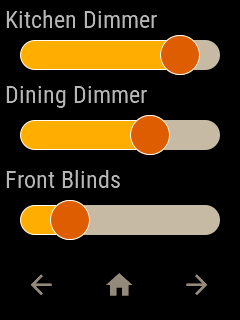
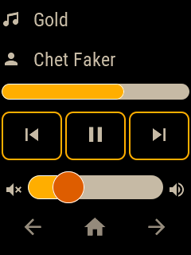
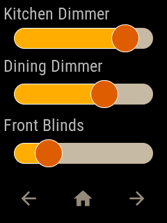
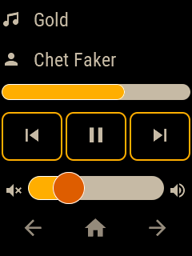

We call plate any device running openHASP in your system.
Jaffa Sunrise sample for openHAB
The openHAB configuration files to have this demo load automatically can be found here.
Update the IP-address for your MQTT-broker in the haspLVGL_demo.things file.
Make sure you have your plate connected to the network and to your MQTT boker, and your topic is set to demo_plate.
Configuration example
To add an openhasp plate to your installation with Jaffa Sunrise sample configuration, upload a pages.jsonl file with the folowing content to your plate:
{"page":1,"comment":"---------- Page 1 ----------"}
{"obj":"btn","id":4,"x":5,"y":5,"w":230,"h":58,"bg_color":"#000000","border_color":"#FFAC00","border_width":2,"radius":10,"radius1":10,"radius2":10,"text":"Lights On","value_ofs_x":-85,"value_font":28,"value_str":"\uE6E8","value_color":"#B6B6B6","text_color":"#B6B6B6","text_font":22}
{"obj":"btn","id":5,"x":5,"y":68,"w":230,"h":58,"bg_color":"#000000","border_color":"#FFAC00","border_width":2,"radius":10,"radius1":10,"radius2":10,"text":"Daylight","value_ofs_x":-85,"value_font":28,"value_str":"\uE599","value_color":"#B6B6B6","text_color":"#B6B6B6","text_font":22}
{"obj":"btn","id":6,"x":5,"y":131,"w":230,"h":58,"bg_color":"#000000","border_color":"#FFAC00","border_width":2,"radius":10,"radius1":10,"radius2":10,"text":"Night","value_ofs_x":-85,"value_font":28,"value_str":"\uE594","value_color":"#B6B6B6","text_color":"#B6B6B6","text_font":22}
{"obj":"btn","id":7,"x":5,"y":194,"w":230,"h":58,"bg_color":"#000000","border_color":"#FFAC00","border_width":2,"radius":10,"radius1":10,"radius2":10,"text":"Lights Off","value_ofs_x":-85,"value_font":28,"value_str":"\uE335","value_color":"#B6B6B6","text_color":"#B6B6B6","text_font":22}
{"page":2,"comment":"---------- Page 2 ----------"}
{"obj":"label","id":8,"x":5,"y":5,"w":230,"h":30,"bg_color":"#000000","border_color":"#C7BAA7","border_width":0,"radius":10,"radius1":10,"radius2":10,"text":"Kitchen Dimmer","text_color":"#B6B6B6","text_font":22}
{"obj":"label","id":9,"x":5,"y":80,"w":230,"h":30,"bg_color":"#000000","border_color":"#C7BAA7","border_width":0,"radius":10,"radius1":10,"radius2":10,"text":"Dining Dimmer","text_color":"#B6B6B6","text_font":22}
{"obj":"label","id":10,"x":5,"y":165,"w":230,"h":30,"bg_color":"#000000","border_color":"#C7BAA7","border_width":0,"radius":10,"radius1":10,"radius2":10,"text":"Front Blinds","text_color":"#B6B6B6","text_font":22}
{"obj":"slider","id":11,"x":20,"y":40,"w":200,"h":30,"bg_color":"#C7BAA7","border_color":"#C7BAA7","border_width":0,"radius":15,"radius1":15,"radius2":20,"text_font":1,"val":80,"bg_color1":"#FFAC00","bg_color2":"#DC5C05"}
{"obj":"slider","id":12,"x":20,"y":120,"w":200,"h":30,"bg_color":"#C7BAA7","border_color":"#C7BAA7","border_width":0,"radius":15,"radius1":15,"radius2":20,"text_font":1,"val":65,"bg_color1":"#FFAC00","bg_color2":"#DC5C05"}
{"obj":"slider","id":13,"x":20,"y":205,"w":200,"h":30,"bg_color":"#C7BAA7","border_color":"#C7BAA7","border_width":0,"radius":15,"radius1":15,"radius2":20,"text_font":1,"val":25,"bg_color1":"#FFAC00","bg_color2":"#DC5C05"}
{"page":3,"comment":"---------- Page 3 ----------"}
{"obj":"label","id":14,"x":42,"y":10,"w":236,"h":30,"bg_color":"#000000","border_color":"#C7BAA7","border_width":0,"text":"Gold","text_color":"#C7BAA7","text_font":22}
{"obj":"label","id":15,"x":42,"y":60,"mode":"scroll","w":236,"h":30,"bg_color":"#000000","border_color":"#C7BAA7","border_width":0,"text":"Chet Faker","text_color":"#C7BAA7","text_font":22}
{"obj":"btn","id":16,"x":2,"y":140,"w":76,"h":61,"bg_color":"#000000","border_color":"#FFAC00","border_width":2,"radius":10,"radius1":10,"radius2":10,"text":"\uE4AE","text_color":"#C7BAA7","text_font":28}
{"obj":"btn","id":17,"x":82,"y":140,"w":76,"h":61,"bg_color":"#000000","border_color":"#FFAC00","border_width":2,"radius":10,"radius1":10,"radius2":10,"text":"\uE3E4","text_color":"#C7BAA7","text_font":28}
{"obj":"btn","id":18,"x":162,"y":140,"w":76,"h":61,"bg_color":"#000000","border_color":"#FFAC00","border_width":2,"radius":10,"radius1":10,"radius2":10,"text":"\uE4AD","text_color":"#C7BAA7","text_font":28}
{"obj":"bar","id":19,"x":2,"y":105,"w":236,"h":20,"bg_color":"#C7BAA7","border_color":"#C7BAA7","border_width":0,"radius":15,"radius1":15,"radius2":15,"text_font":1,"val":65,"bg_color1":"#FFAC00"}
{"obj":"slider","id":20,"x":35,"y":220,"w":170,"h":30,"bg_color":"#C7BAA7","border_color":"#C7BAA7","border_width":0,"radius":15,"radius1":15,"radius2":20,"text_font":1,"val":30,"bg_color1":"#FFAC00","bg_color2":"#DC5C05"}
{"obj":"label","id":21,"x":2,"y":10,"w":40,"h":61,"bg_color":"#000000","border_color":"#C7BAA7","border_width":0,"text":"\uE75A","text_color":"#C7BAA7","text_font":22}
{"obj":"label","id":22,"x":2,"y":60,"w":36,"h":61,"bg_color":"#000000","border_color":"#C7BAA7","border_width":0,"text":"\uE004","text_color":"#C7BAA7","text_font":22}
{"obj":"label","id":23,"x":5,"y":224,"w":25,"h":40,"bg_color":"#000000","border_color":"#C7BAA7","border_width":0,"text":"\uE75F","text_color":"#C7BAA7","text_font":22}
{"obj":"label","id":24,"x":210,"y":224,"w":25,"h":40,"bg_color":"#000000","border_color":"#C7BAA7","border_width":0,"text":"\uE57E","text_color":"#C7BAA7","text_font":22}
{"page":0,"comment":"---------- All pages ----------"}
{"obj":"btn","id":1,"x":5,"y":257,"w":73,"h":58,"bg_color":"#000000","border_color":"#C7BAA7","border_width":0,"radius":10,"radius1":10,"radius2":10,"text":"\uE04D","text_color":"#978B7D","text_font":28}
{"obj":"btn","id":2,"x":83,"y":257,"w":73,"h":58,"bg_color":"#000000","border_color":"#C7BAA7","border_width":0,"radius":10,"radius1":10,"radius2":10,"text":"\uE2DC","text_color":"#978B7D","text_font":28}
{"obj":"btn","id":3,"x":161,"y":257,"w":73,"h":58,"bg_color":"#000000","border_color":"#C7BAA7","border_width":0,"radius":10,"radius1":10,"radius2":10,"text":"\uE054","text_color":"#978B7D","text_font":28}
Restart the plate and the demo page should load automatically to your device.
Result
 


